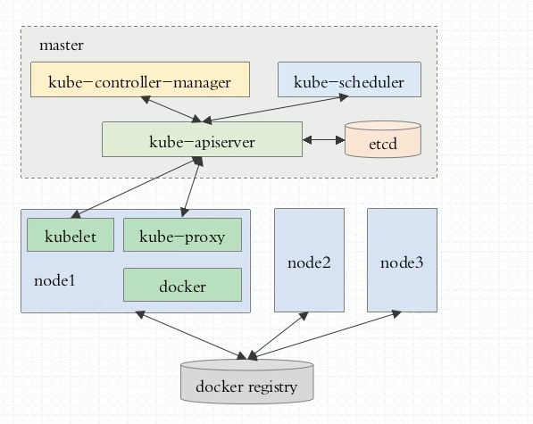

K8S集群初始化
集群架构图
- 

kube部署
- k8s组件都运行为容器
- static pod
- master, nodes: 安装kubelet,kubeadm,docker
- master: kubeadm init
- nodes: kubeadm join
kubeadm join 10.19.1.211:6443 --token 5jg2wm.lvzwvvq2ubr0uyl4 --discovery-token-ca-cert-hash sha256:56180787411165f97e1da1e7c3a33d17f5eea7e13c5003bae458dd883ce7b543
- pod,service,replicaset,deployment,statefulet,daemonset,job,cronjon,node
- 查看k8s的DNS服务器kubectl get pods -n kube-system -o wide
- wget -O - -q http://nginx:80/
- kubectl get pods --show-labels
- kubectl get deployment -w 监控
- kubectl scale --replicas=5 deployment myapp 动态扩容和缩容
- kubectl set image deployment myapp myapp=ikubernetes/myapp:v2 升级
- 回滚 kubectl rollout undo deployment myapp
- 基于yml来管理
docker1.13无法启动镜像
- ln -sf /usr/libexec/docker/docker-runc-current /usr/bin/docker-runc
- kubectl delete deployment myapp
- kubectl get deployment
- kubectl exec -it client -c busy-deploy -- /bin/sh
- oc rsh client

edia/15355258133696/15355271868297.jpg)


Copyright © 2015 Powered by MWeb, Theme used GitHub CSS.